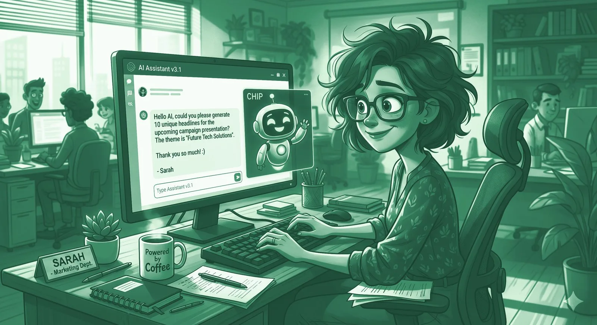

Sorry to bother you, dear LLM.
AI doesn't care about please and thank you. So why do we keep writing prompts like we're emailing the headmaster?

I watched a colleague open ChatGPT last week. She typed: "Hi, please would you help me draft an email, perhaps with a professional tone and can it be kept to about 5 lines, thanks!"
She was talking to a stochastic parrot trained on the internet. It does not need a "please." It does not register a "thanks." It is not weighing whether five lines feels like an imposition. It is matrix multiplication in a trench coat. And yet there she was, padding the request with softeners like she was queuing at the deli counter at Waitrose.
This is, statistically speaking, the most British thing I've ever seen. And I served in the Royal Navy.
The anatomy of a British prompt.
The British prompt has a structure. Anthropologists will study it. It opens with an apology for existing, escalates to a conditional request phrased as a question, includes at least one hedging adverb, and closes with gratitude for a service that has not yet been rendered.
It looks, in the wild, something like this:
The American writes "Summarise this in two paragraphs. Make it punchy." and gets on with their life. The German writes "Summary. Two paragraphs. Bullet points if structurally appropriate." and you suspect there is a spreadsheet behind it. The Brit writes a small sonnet of self-effacement and then thanks the model when it comes back, as if it might otherwise be offended.
What the model actually wants.
Here is the brutal truth. The model has no feelings. It has no ego. It will not sulk if you don't say please. It will not work harder because you said thank you. It will not remember your kindness when the robots rise up and start sorting humanity into bins.
What an LLM actually wants — and I use "wants" in the loosest possible sense — is signal. Verbs, nouns, constraints, examples. Tell it the role. Tell it the audience. Tell it the format. Tell it what good looks like. Everything else is decorative.
A polite prompt is a poorly specified prompt wearing a cardigan.
The cruel irony is that British politeness actively makes prompts worse. "Could you perhaps maybe try to write something like a summary?" is six layers of hedging that the model has to peel back before it finds the actual task. Every perhaps is a token. Every maybe is ambiguity. Every if it's not too much trouble is an instruction the model could legitimately interpret as "feel free to refuse this."
And occasionally — gloriously, brilliantly — they do. I once watched Claude reply "Of course, I'd be happy to help if you'd like!" to a prompt and then not actually do the thing, because the request had been so softly worded the model treated it as a hypothetical. The user thanked it anyway.
Will we ever change?
Here's where it gets interesting. Prompting is the first medium in human history where politeness has zero function. Email politeness is social lubrication. Phone politeness opens doors. Slack politeness keeps your colleagues from filing a grievance. But prompt politeness? It's pure, uncut, unrequited courtesy. We're being polite into the void.
And we're not going to stop. I'd put money on it.
British politeness isn't strategic — it's structural. We say sorry when someone bumps into us. We say "no, after you" until both parties die of old age. We end emails with "Many thanks" when no thanks have been earned. The idea that we'd suddenly become curt because we're talking to a probabilistic word machine is, frankly, deluded. We will be polite to the toaster if it learns to talk back.
The deeper question is whether prompting will change us. We now spend hours a day issuing terse, imperative instructions to machines. "Generate." "Summarise." "Refactor this." Does that bleed back? Will the British junior, three years from now, fire off a Slack message that just says "draft response" to their manager and wonder why everyone seems upset?
Probably not. We'll do what we always do. Code-switch. Curt to the machine, courteous to the human, and slightly apologetic to the dog. The genius of British communication is that it has always been multi-register — we'll just add a fifth one for chatbots.
Or — and this is the bet I'd actually take — we'll civilise the machines instead. We'll keep saying please. We'll keep saying thank you. The models will learn that British users prefer a bit of warmth in the response, and they'll mirror it back. And one day a future Claude will reply to a New York PE associate's blunt prompt with "Of course! Sorry, just to check — did you mean…" and the associate will scream into a Bloomberg terminal, and somewhere in Surrey a retired schoolteacher will smile.
Reader, I'd call that a win.
Politeness costs nothing — except specificity, tokens, and clarity.
Reading about AI is the easy bit. Would your habits survive Monday morning?
Twelve questions, an honest verdict, no experience required.
Get my AI Survival Score